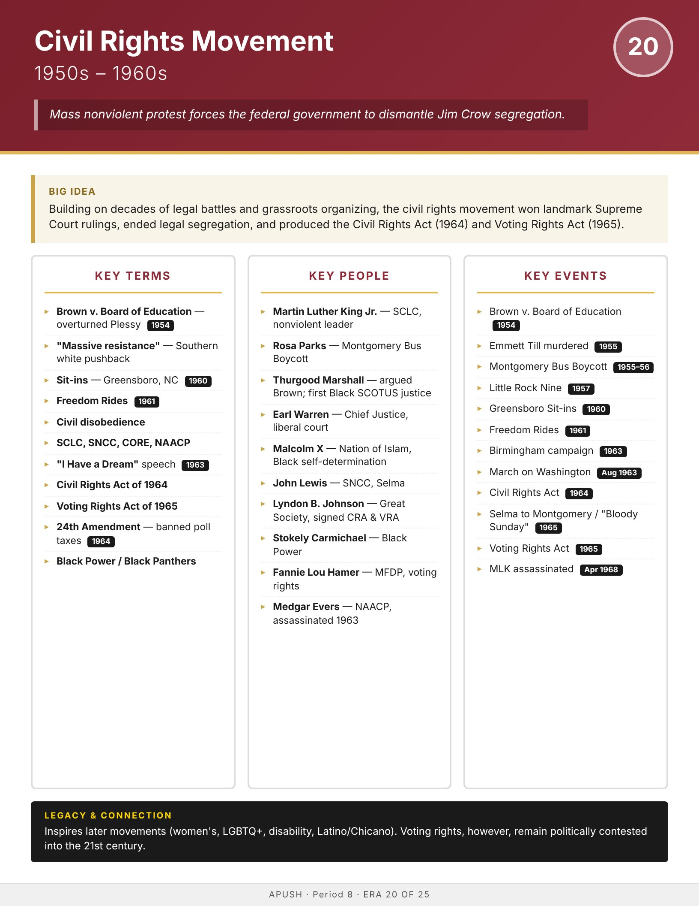

Era
Wise
AP History
AP United States History
Home
Course Sequence
Eras
Exam Prep
DBQ Guides
← Course Sequence
Era 20 of 25 · AP Period 8 · Lessons 48–50
Civil Rights Movement
1950s–1960s
Open infographic full size
Print

← ERA 19
Early Cold War
ALL ERAS
Eras index
ERA 21 →
Vietnam & Social Upheaval